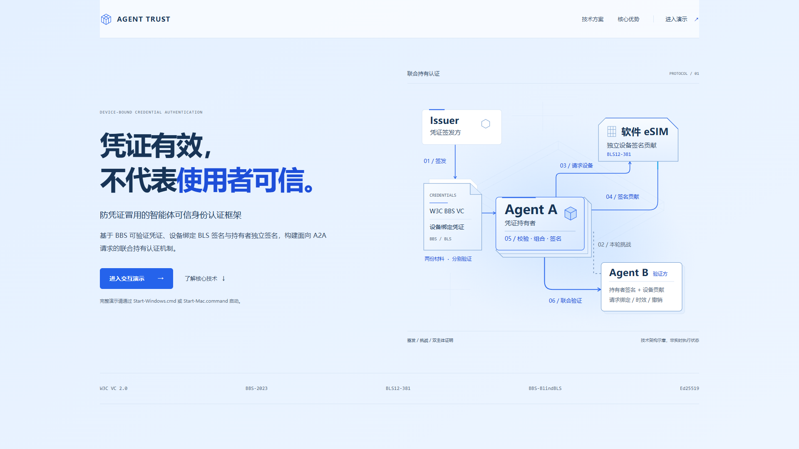
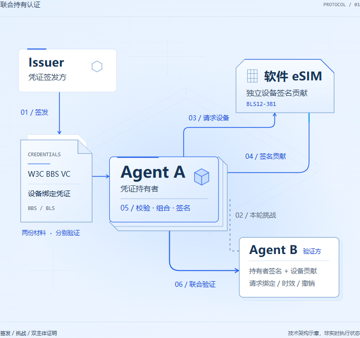
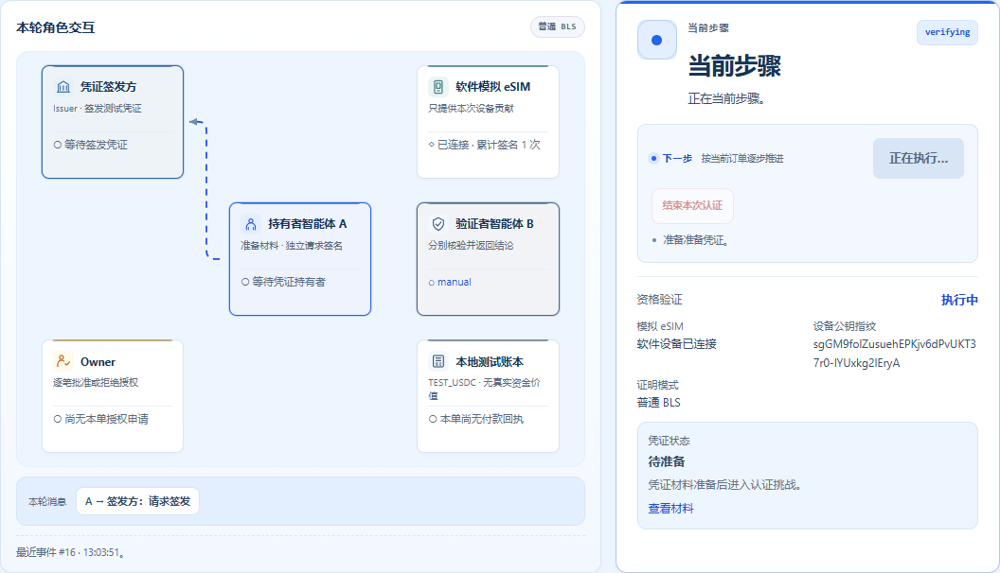
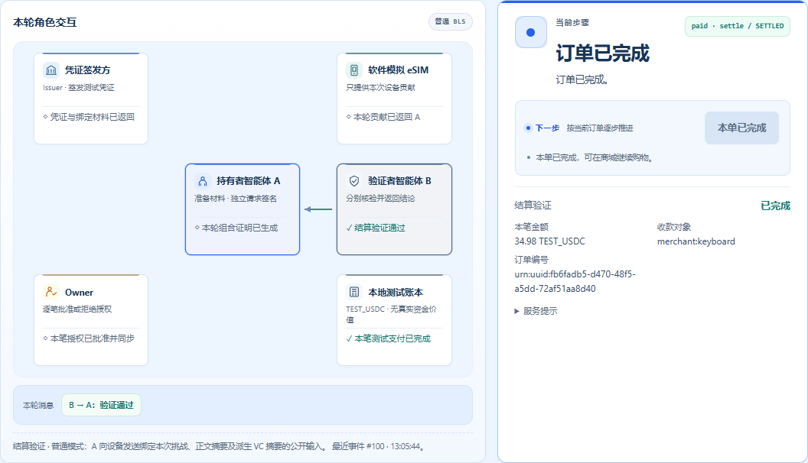

ShoppingAuth · 浅色视觉修复
按提示词 8，以已交付浅蓝版为基线。首页统一为 #F5F7FB，移除背景蓝色晕染，修复控制台运行消息的虚线周期。原布局与协议流程保留。


首页

联合持有认证


真实协议执行中的截图
蓝色虚线跟随真实运行事件；PNG 为静态截图。实测记录了 146 帧运行状态，连续移动和循环周期均通过检查。

同一笔订单完成后

功能核查
58 项单元测试、10 项首页浏览器检查、8 组完整手动付款验收和 2 项安全实验通过。运行时、源码及截图的核对记录随包保留。macOS 未实机测试。